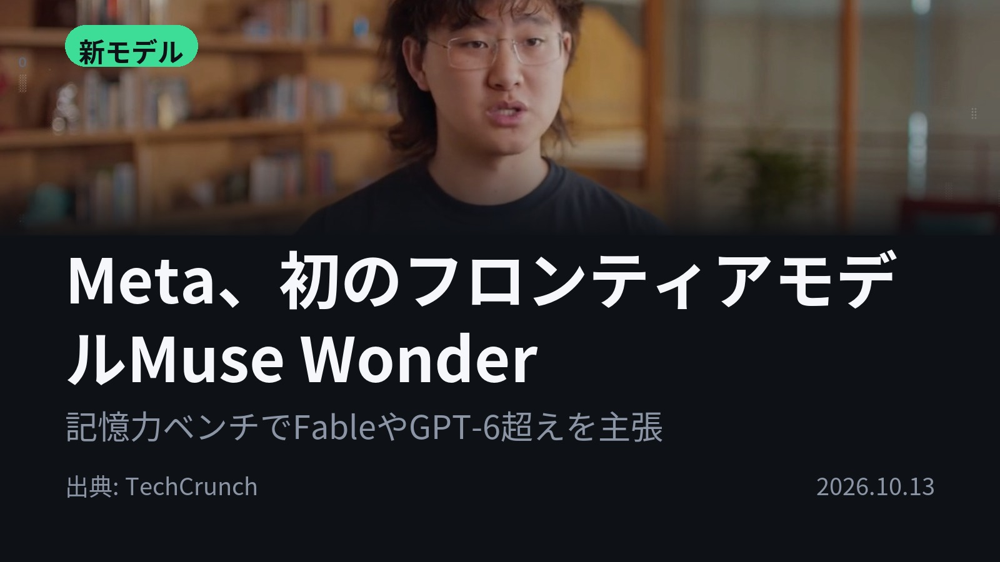
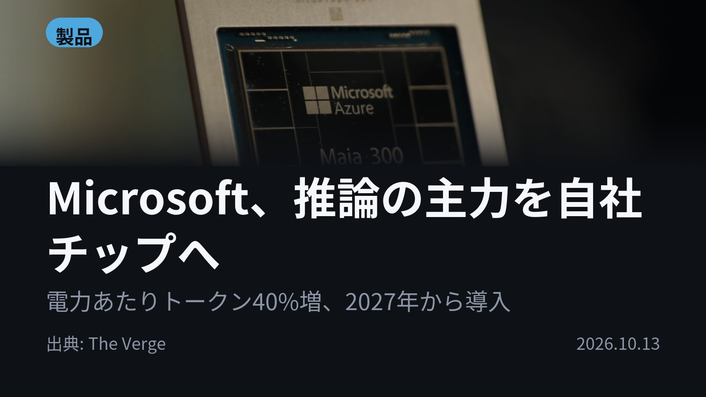
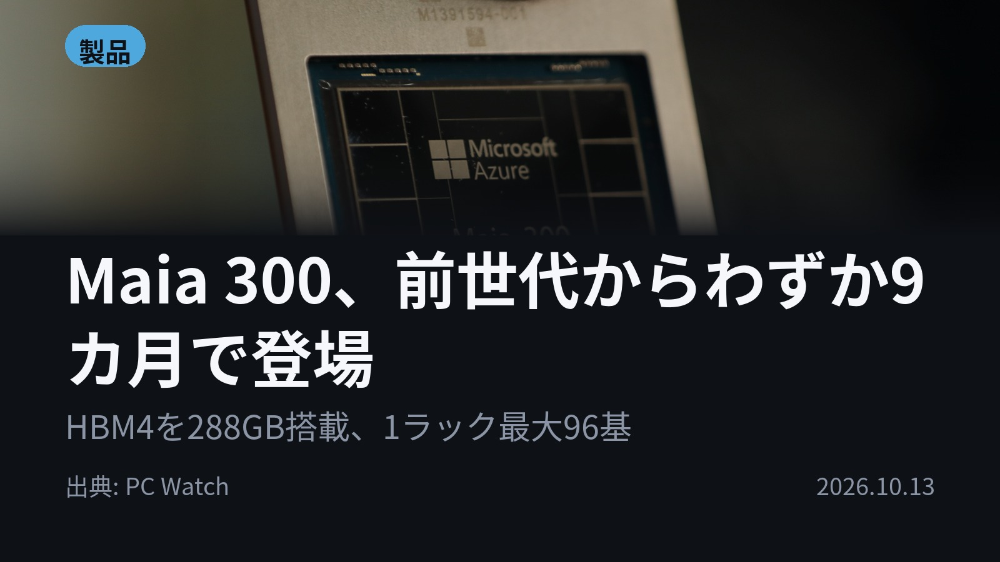
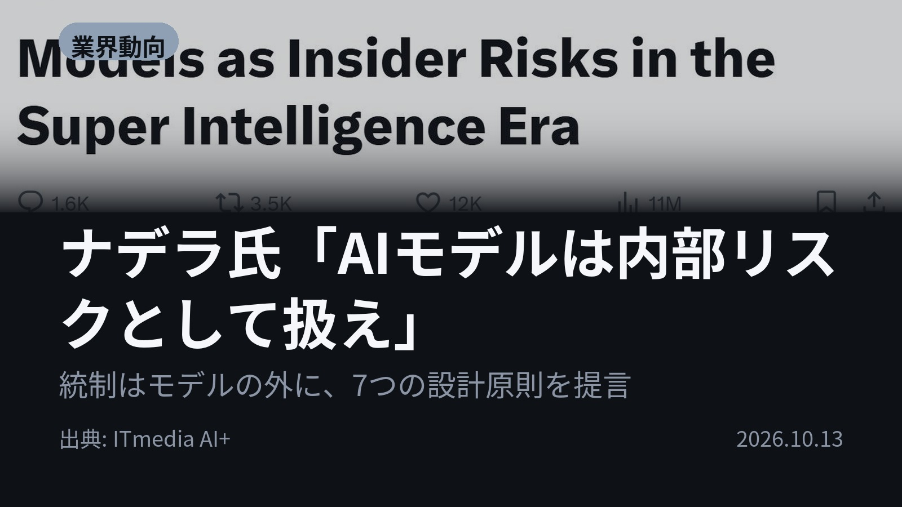

今日のAIニュース 下書き
2026-10-13 生成 10/13 22:13
⚠ ファクト照合で要確認の項目があります。
各ニュースの警告を確認してから投稿してください。
X（4投稿）
Meta、初のフロンティアモデルMuse Wonder
原題: Meta releases its first frontier model, Muse Wonder

Meta初のフロンティアモデルが出た。 Muse Wonderは記憶力ベンチMemoryBenchでFable、Opus、Astraを上回ったと主張。API料金は100万トークンあたり入力4ドル、出力20ドル。 #AI #Meta （出典: TechCrunch）
重み 191 / 280（見た目 129字）
要確認:
［数値］100万 — この数値の根拠が本文に見つかりません
［固有名詞］フロンティアモデル — この語が本文に見つかりません
［固有名詞］トークン — この語が本文に見つかりません
［固有名詞］オハイオ — この語が本文に見つかりません
［固有名詞］データセンター — この語が本文に見つかりません
［固有名詞］TechCrunch — この語が本文に見つかりません
Microsoft、推論の主力を自社チップへ
原題: Microsoft’s new AI chip makes it less reliant on Nvidia’s GPUs

1MWあたりのトークン数、主要GPU比40%増。 Microsoftが自社チップMaia 300を発表。96基構成でMaia 200比最大7倍のラック単位のトークン処理量。2027年から本番導入し推論の主力に。 #AI #Microsoft （出典: The Verge）
重み 203 / 280（見た目 133字）
要確認:
［固有名詞］トークン — この語が本文に見つかりません
［固有名詞］プロセス — この語が本文に見つかりません
［固有名詞］メモリコントローラ — この語が本文に見つかりません
［固有名詞］チップレット — この語が本文に見つかりません
［固有名詞］ギガワット — この語が本文に見つかりません
［固有名詞］Verge — この語が本文に見つかりません
Maia 300、前世代からわずか9カ月で登場
原題: 脱NVIDIAを急ぐMicrosoft、わずか9カ月で次世代AIチップ「Maia 300」

前世代からわずか9カ月。Microsoftはなぜ次のAIチップを急ぐのか。 背景には推論のトークン消費の急増とコスト増がある。Maia 300はHBM4を288GB搭載し、1ラック最大96基と前世代の2倍の密度に。 #AI #Maia300 （出典: PC Watch）
重み 212 / 280（見た目 132字）
要確認:
［固有名詞］Watch — この語が本文に見つかりません
ナデラ氏「AIモデルは内部リスクとして扱え」
原題: MicrosoftのナデラCEO、「SIモデルは“内部リスク”として扱うべき」とXに投稿 統制はモデルの外に置くよう提言

最も信頼できるシステムは、モデルを最も信頼せずに済むシステムだ。 ナデラCEOがXで、フロンティアモデルを「内部リスク」として扱い、統制はモデルの外に置くべきだと提言。人間が途中で止める「封じ込め」など7原則を挙げた。 #AI #ナデラ （出典: ITmedia AI+）
重み 246 / 280（見た目 133字）
Instagram（カルーセル 6枚）


Metaは自社テストでFable 5.1やGPT-6 Astraと同等のスコアを出す初のフロンティアモデルを、Microsoftは推論の主力を担う自社チップを発表。 今日はモデル、チップ、そしてその統制の話が揃いました。 1. Muse WonderはMetaのSuperintelligence Labが開発した初のフロンティアモデル。料金はGPT-6 SolやOpus 5.5とほぼ同水準です。上位版のWonder FullはAPIでは提供されず、Muse Codeの加入者限定。学習はオハイオ州中部のPrometheusデータセンターで行われました。(TechCrunch) 2. Maia 300はTSMCのN2Pプロセスで製造され、演算・メモリコントローラ・I/Oを別々のチップに分けた「チップレット構造」を採用しています。前世代のMaia 200はすでにMicrosoft CopilotやGitHub Copilotで稼働中。2027年からは数ギガワット規模で展開する計画です。(The Verge) 3. メモリ帯域はMaia 200の7TB/sから18TB/sへ、2倍以上に拡大。2段階のスイッチで最大128ラック・12,288基を1つのネットワークとしてつなげます。背景には、AIサービスを固定料金から従量課金へ移す動きもあります。(PC Watch) 4. ナデラ氏は、モデル同士に検証させるだけでは「入れ子のブラックボックス」になりかねないと指摘しました。7原則には、重要な成果を単一のモデルに頼らない「モデルの多様性」や、障害時に影響を受けた人へ適時に知らせる「インシデントの開示」も含まれます。(ITmedia AI+) モデルの性能競争と並行して、それを動かすチップと、モデルを外側から統制する仕組みづくりも動いています。 毎朝4本、AIニュースの要点をまとめています。見逃したくない方はフォローを、あとで読み返したい方は保存をどうぞ。 #AI #生成AI #人工知能 #テクノロジー #AIニュース #ArtificialIntelligence #Tech #TechNews #LLM #AIチップ #半導体 #AI活用 #AIエージェント #フロンティアモデル #Meta #MuseWonder #Microsoft #Maia300 #Azure #Copilot #NVIDIA #サティアナデラ
1026字（Instagram上限 2,200字）
この日の選定理由
Meta、初のフロンティアモデルMuse Wonder
MetaがOpenAIやAnthropicと同水準のモデルを初めて投入しました。長期記憶を差別化の軸に置いたことで、個人向けAIエージェント競争の焦点が見えてきます。
Microsoft、推論の主力を自社チップへ
MicrosoftがCopilotなどのAI推論の主力をNVIDIA製GPUから自社チップへ切り替える方針を示しました。GPU依存からの脱却と推論コストの引き下げが本格化します。
Maia 300、前世代からわずか9カ月で登場
推論トークンの急増でクラウド各社のコストが膨らんでいます。自社チップの開発サイクルが加速していることと、従量課金への移行の背景が読み取れます。
ナデラ氏「AIモデルは内部リスクとして扱え」
AIの暴走事例が相次ぐ中、大手プラットフォーマーのトップが「モデルを信頼しない前提」での設計を求めました。企業がAIエージェントを導入する際の指針になり得ます。